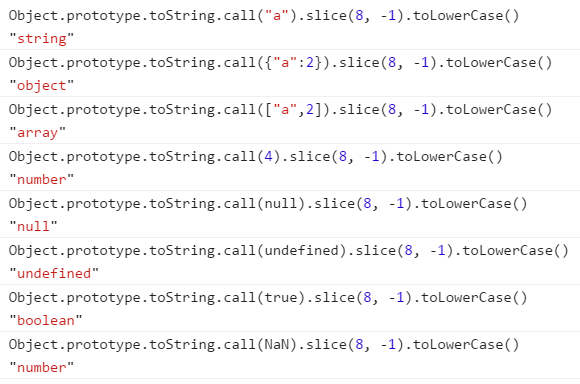

javascript中对象的深度克隆
2017-06-01 星期四 丁酉年 五月初七
【鸡年】乙巳月 己未日
宜：进人口 牧养 置产 塞穴 结网
忌：诸事不宜
一、js中的对象
谈到对象的克隆，必定要说一下对象的概念。
js中的数据类型分为两大类：原始类型和对象类型
1）原始类型包括：数值、字符串、布尔值、null、undefined
2）对象类型包括：对象即是属性的集合，当然这里又两个特殊的对象----函数（js中的一等对象）、数组（键值的有序集合）。
好了既然对象分为这两类，这两种类型在复制克隆的时候是有很大区别的。原始类型存储的是对象的实际数据，而对象类型存储的是对象的引用地址（对象的实际内容单独存放，为了减少数据开销通常存放在内存中）。ps：说到这里，大家要知道，对象的原型也是引用对象，它把原型的方法和属性放在内存当中，通过原型链的方式来指向这个内存地址
二、克隆的概念
1.浅度克隆：原始类型为值传递，对象类型仍为引用传递。
2.深度克隆：所有元素或属性均完全复制，与原对象完全脱离，也就是说所有对于新对象的修改都不会反映到原对象中。
三、浅克隆的表现
1.原始类型
// 数值克隆的表现
var a = "1";
var b = a;
b = "2";
console.log(a);// "1"
console.log(b);// "2"
// 字符串克隆的表现
var c = "1";
var d = c;
d = "2";
console.log(c);// "1"
console.log(d);// "2"
// 字符串克隆的表现
var x = true;
var y = x;
y = false;
console.log(x);// true
console.log(y);// false
从上面的代码大家可以看出，原始类型即使我们采用普通的克隆方式仍能得到正确的结果，原因就是原始类型存储的是对象的实际数据。
2.对象类型
前面说过，函数是一等对象，当然也是对象类型，但是函数的克隆通过浅克隆即可实现
var m = function(){ alert(1); };
var n = m;
n = function(){ alert(2); };
console.log(m()); // 1
console.log(n()); // 2
大家能看到，我们直接通过普通赋值的方式，就实现了函数的克隆，并且不会影响之前的对象。原因就是函数的克隆会在内存单独开辟一块空间，互不影响。
好了，说了这个特殊的”关系户“以后，我们来说说普通的”选手“。为了方便后续的代码表现，我这里定义一个复杂的对象类型oPerson。下面看一下对象类型的浅复制有什么危害：
var oPerson = {
oName:"rookiebob",
oAge:"18",
oAddress:{
province:"beijing"
},
ofavorite:[
"swimming",
{reading:"history book"}
],
skill:function(){
console.log("bob is coding");
}
};
function clone(obj) {
var result={};
for(key in obj) {
result[key]=obj[key];
}
return result;
}
var oNew = clone(oPerson);
console.log(oPerson.oAddress.province); // beijing
oNew.oAddress.province = "shanghai";
console.log(oPerson.oAddress.province); //shanghai
通过上面的代码，大家能看到，经过对象克隆以后，我修改oNew的地址，发现原对象oPerson也被修改了。这说明对象的克隆不够彻底，那也就是说深度克隆失败！
四、深克隆的实现
为了保证对象的所有属性都被复制到，我们必须知道如果for循环以后，得到的元素仍是Object或者Array，那么需要再次循环，直到元素是原始类型或者函数为止。为了得到元素的类型，我们定义一个通用函数，用来返回传入对象的类型。
// 返回传递给他的任意对象的类
function isClass(o) {
if(o === null) return "Null";
if(o === undefined) return "Undefined";
return Object.prototype.toString.call(o).slice(8,-1);
}
PS:Object.prototype.toString.call(o)能直接返回对象的类属性，形如"[object class]"的字符串，我们通过截取class，并能知道传入的对象是什么类型。
当然这里有两个疑问需要解释下：

（1）为什么不直接用toString方法？这是为了防止对象中的toString方法被重写，为了正确的调用toString()版本，必须间接的调用Function.call()方法
（2）为什么不使用typeof来直接判断类型？因为对于Array而言，使用typeof（Array）返回的是object，所以不能得到正确的Array，这里对于后续的数组克隆将产生致命的问题。
下面就是真正的深度克隆
//深度克隆
function deepClone(obj) {
var result,oClass = isClass(obj);
// 确定result的类型
if(oClass === "Object"){
result = {};
}else if(oClass === "Array"){
result = [];
}else{
return obj;
}
for(key in obj){
var copy = obj[key];
if(isClass(copy) === "Object"){
result[key] = arguments.callee(copy);//递归调用
}else if(isClass(copy) === "Array"){
result[key] = arguments.callee(copy);
}else{
result[key] = obj[key];
}
}
return result;
}
//返回传递给他的任意对象的类
function isClass(o) {
if(o === null) return "Null";
if(o === undefined) return "Undefined";
return Object.prototype.toString.call(o).slice(8,-1);
}
var oPerson = {
oName:"rookiebob",
oAge:"18",
oAddress: {
province:"beijing"
},
ofavorite: [
"swimming",
{reading: "history book"}
],
skill:function() {
console.log("bob is coding");
}
};
/ /深度克隆一个对象
var oNew = deepClone(oPerson);
oNew.ofavorite[1].reading = "picture";
console.log(oNew.ofavorite[1].reading); // picture
console.log(oPerson.ofavorite[1].reading); // history book
oNew.oAddress.province = "shanghai";
console.log(oPerson.oAddress.province); // beijing
console.log(oNew.oAddress.province); // shanghai
从上面的代码可以看到，深度克隆的对象可以完全脱离原对象，我们对新对象的任何修改都不会反映到原对象中，这样深度克隆就实现了。
这里要注意一点的就是：为什么deepClone这个函数中的result一定要判断类型？这里有一种情况，如果你的result直接是{}对象，我明明传进去的是一个数组，结果你复制完了以后，变成了一个对象了。
//深度克隆
function deepClone(obj) {
var result={},oClass = isClass(obj);
// if(oClass==="Object"){
// result={};
// }else if(oClass==="Array"){
// result=[];
// }else{
// return obj;
// }
for(key in obj) {
var copy = obj[key];
if(isClass(copy) === "Object"){
result[key] = arguments.callee(copy);
}else if(isClass(copy) === "Array"){
result[key] = arguments.callee(copy);
}else{
result[key] = obj[key];
}
}
return result;
}
function isClass(o) {
if(o === null) return "Null";
if(o === undefined) return "Undefined";
return Object.prototype.toString.call(o).slice(8,-1);
}
// 克隆一个数组
var arr = ["a","b","c"];
var oNew = deepClone(arr);
console.log(oNew); // Object {0: "a", 1: "b", 2: "c"}

微信打賞

支付寶打賞